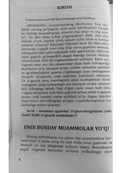

B1Ingliz tilini samarali o'rganish uchun mo'ljallangan amaliy qo'llanma.
Ushbu qo'llanma ingliz tilini samarali o'rganish uchun mo'ljallangan bo'lib, 'Mini Hikaye' va 'Bakis agisi' usullari orqali tinglash va nutq qobiliyatlarini rivojlantirishga qaratilgan. Kitob turli zamonlarda matnlar tuzish va ularni amaliyotda qo'llash bo'yicha bosqichma-bosqich ko'rsatmalarni o'z ichiga oladi.